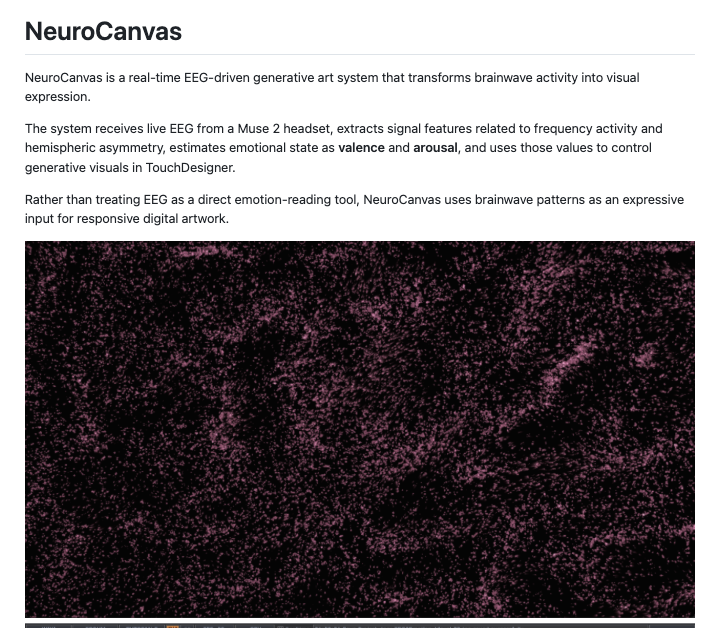
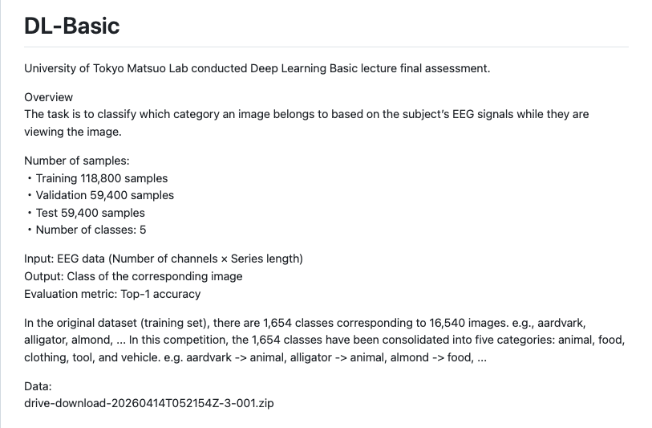
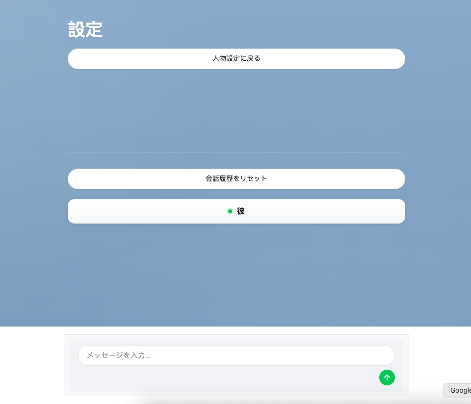
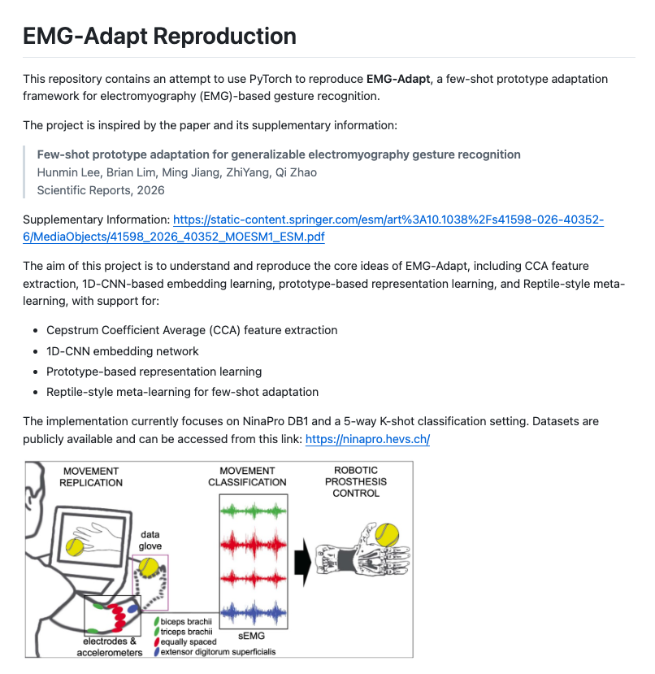
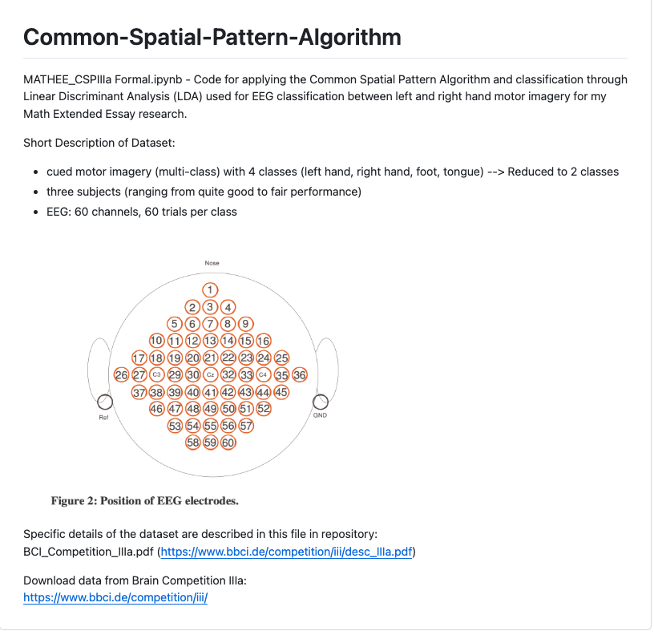

受賞・活動
- FastNeura インターン 2026年2月から6月まで、ニューロテック系スタートアップ FastNeura でインターンとして活動。
- 深層生成モデル 2026 Spring 東京大学 松尾研究室主催の講座を修了。
- 日本人工知能オリンピック2026 オープン枠 銅賞。
- 第12回日本脳科学オリンピック（Japan Brain Bee） 全国8位入賞。
- 「情報科学の達人」6期生採択 国立情報学研究所（NII）のプログラムに採択。杉山麿人准教授の指導のもと、情報処理学会（IPSJ）2026でポスター「Proposing a Deep Spiking Neural Network Inspired by Global Feedback Mechanisms in the Visual Cortex」を発表。
- 国際バカロレア（IB）ディプロマ・プログラム IBディプロマを修了。Extended Essayでは、右手・左手の運動想起に関する脳波分類にCommon Spatial Pattern（CSP）を適用する研究を行い、約4,000語の英語論文を執筆。校内優秀賞を受賞。
- Deep Learning 基礎講座 2025 Spring 東京大学 松尾研究室主催の講座を修了。脳波解析の最終課題において、CNNとAttention機構を組み合わせた独自モデルを設計。
- Imperial College London サマープログラム 2024年8月に参加。自然言語処理における単語埋め込みの論文を読み、グループで内容を要約して発表。
- プログラミング教育HALLO タイピングコンテスト 第1回大会 高校生部門 3位（2024年）。
プロジェクト

Python · EEG · TouchDesigner
NeuroCanvas
Muse EEG信号からvalence/arousalを推定し、TouchDesignerの生成ビジュアルをリアルタイムに制御するEEGパイプライン。
GitHubで見る
Jupyter Notebook · EEG Classification
DL-Basic
松尾研究室 Deep Learning基礎講座の最終課題。画像を見ているときの脳波信号から、画像カテゴリを分類するモデルを設計。
GitHubで見る
Hugging Face Space · Streamlit · Claude API
LineChatbot
Claude APIを用いて会話相手をロールプレイするStreamlitチャットアプリ。アップロードしたLINEトーク履歴から、任意で相手の特徴や関係性を分析。
Hugging Faceで見る
PyTorch · EMG · Few-shot Learning
EMG-Adapt Reproduction
EMG-Adaptの再現実装。CCA特徴量、1D-CNN埋め込み、プロトタイプ学習、メタラーニングを用いた少数ショットEMGジェスチャ認識に取り組んだ。
GitHubで見る
Jupyter Notebook · EEG · LDA
Common Spatial Pattern
IB Extended Essayで用いた研究コード。CSPとLDAを用いて、右手・左手の運動想起に関する脳波分類を行った。
GitHubで見るスキル
-
プログラミング
- Python
- 機械学習、EEG/EMG信号解析
- Streamlitアプリ開発とHugging Face Spacesへのデプロイ
- NeuroCanvasやLineChatbotなどの創造的・生成的プロジェクト
- C++
- 競技プログラミング
- Python
-
機械学習
- 研究
- 視覚皮質のトップダウンなグローバルフィードバック機構に着想を得て、局所的なSTDP学習とフィードバック信号を組み合わせたDeep Convolutional Spiking Neural Network（DCSNN）を提案。
- MNISTとETH-80で従来のDCSNNと比較評価し、分類精度の向上とニューロン発火活動の増加を確認。
- MLを用いたプロジェクト
- NeuroCanvas: Muse EEG信号からvalence/arousalを推定し、TouchDesignerのビジュアルを制御するリアルタイムシステムを構築。
- DL-Basic: 松尾研究室 Deep Learning基礎講座で、脳波信号から画像カテゴリを予測するEEG分類モデルを設計。
- LineChatbot: Claude APIを用いたStreamlitチャットボットをHugging Face Spacesにデプロイ。LINEトーク履歴から任意で相手の特徴や関係性を分析。
- EMG-Adapt Reproduction: CCA特徴量、1D-CNN埋め込み、プロトタイプ学習、メタラーニングを用いたFew Shot EMGジェスチャ認識パイプラインを再現。
- Common Spatial Pattern: IB Extended Essayで、CSPとLDAを用いて右手・左手の運動想起に関する脳波分類を実施。
- ...進行中の非公開プロジェクトあり
- 強み
- 特にコンピュータビジョン、生成モデル、自然言語処理に関心があり、勉強をしている。データ処理から評価・デプロイまでの機械学習の基礎を理解し、実装できる。
- 研究課題の設定、関連研究の調査、実験、論文執筆まで、レビューやフィードバックを受けながら自走できる。
- 研究
-
リーダーシップ・ボランティア・発信
- Kids Code Club: 高校生ボランティア団体の中心メンバーとして、障がいや技術アクセスの不足がある子どもたちにコーディングを教え、AIプログラムの実施にも貢献。
- IB Rocket Club: 学校でIBロケット部を創設し、1年間リーダーを務めた。
- Iseta Myojoen Elderly Care Home: 高齢者施設で、洗い物・会話・清掃などのボランティアを行う中で、日本の介護サービスの現場を直接学んだ。
- Papillon: バンド「Papillon」でギタリストとして活動。学校祭で演奏し、Instagramに演奏動画を継続的に投稿、約300人のフォロワーを獲得。
- テニス: 中学2年生から5年以上継続。
- Qiitaでの執筆: エンジニア向けの知識共有プラットフォームであるQiitaで、機械学習の学習を通じて得た数学的知識を技術記事として発信。
-
言語
- 日本語
- ネイティブレベル
- 英語
- ビジネスレベル
- TOEFL iBT 107/120（2025/10）
- 英語の研究論文を読み、分析し、評価することに支障はない。
- 日本語